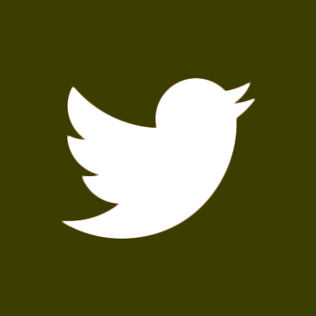
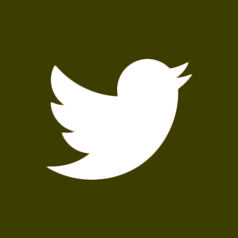

Work Experience
This section looks at positions that I currently hold or have held recently that utilize skills that I have picked up between my education and my time in the workforce. Click on any of the options to see further details and a breakdown of tasks and skills that I have honed via that position.
Maker Hub @ Elon University
Team Lead of Communications
Elon, NC | December 2018 to present
Recommended to professors ways to best incorporate aspects of the Design Thinking Process into coursework
Evaluated entrepreneurial grant applications to consider which ones should receive university grant funding
Provided guidance and technical support for students using 3D printers, Laser Cutters, and CNC machines
Led orientations to introduce students (and other visiting groups) to the features of the makerspace
VIDEO
National Development Committee
Project Team Lead
Raleigh, NC | August 2016 to present
Coached stakeholders of 60+ chapters on leveraging resources to meet national norms via annual meetings
Defined national standards and guidelines for various initiatives that align with our overarching objectives
Performed periodic reviews of the strategic plan to continually recalibrate the best ways to meet our goals
Go Green Initiative
Executive Intern
Pleasanton, CA | June to August 2016
Managed correspondence for the international non profit with prospective global partners
Wrote press releases and donation acknowledgements
Researched self sustaining cash flow options for non profit organizations


 
